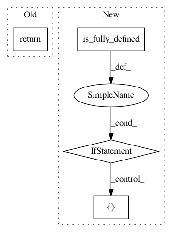

e164c3574da160fb72fc962947a783fa299424e3,sonnet/src/batch_apply.py,,merge_leading_dims,#Any#Any#,97
Before Change
if len(x.shape) < num_dims:
return x
return tf.reshape(x, [-1] + x.shape.as_list()[num_dims:])
After Change
return x
static_shape = [maybe_prod(x.shape[:num_dims])] + x.shape[num_dims:]
if static_shape.is_fully_defined(): // pytype: disable=attribute-error
return tf.reshape(x, static_shape)
// Shape can"t be inferred statically.
tensor_shape = tf.shape(x)
leading_dim = tf.reduce_prod(tensor_shape[:num_dims], keepdims=True)
other_dims = tensor_shape[num_dims:]
dynamic_shape = tf.concat([leading_dim, other_dims], axis=0)
result = tf.reshape(x, dynamic_shape)
// We lose some static shape information from the above reduce/slice/concat
// dance, so we explicitly pass it in from what we computed earlier.
In pattern: SUPERPATTERN
Frequency: 3
Non-data size: 4
Instances
Project Name: deepmind/sonnet
Commit Name: e164c3574da160fb72fc962947a783fa299424e3
Time: 2019-07-07
Author: tomhennigan@google.com
File Name: sonnet/src/batch_apply.py
Class Name:
Method Name: merge_leading_dims
Project Name: deepmind/sonnet
Commit Name: 2faf7acd48088783ab4d8507cc3eb1e74430b3ad
Time: 2019-08-14
Author: slebedev@google.com
File Name: sonnet/src/reshape.py
Class Name: Reshape
Method Name: __call__
Project Name: tensorflow/agents
Commit Name: 5a5396a4e83801d5000f579beb99b85f723786f4
Time: 2020-10-23
Author: no-reply@google.com
File Name: tf_agents/networks/utils.py
Class Name: BatchSquash
Method Name: flatten